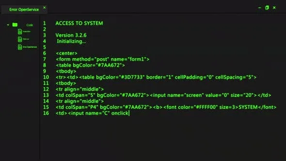

Hi! I'm Artur Ciechanowski, I'm a...
SoftWare Developer
SoftWare Developer
I'm a Software Developer with a passion for creating and developing
software. I have experience in developing web applications using
technologies such as HTML, CSS, JavaScript, React, Node.js, and
Express.
I am constantly seeking opportunities to learn new technologies and
enhance my skills.
My passion for coding is fueled by the joy I find in solving complex
problems and the satisfaction that comes with developing functional
and user-friendly applications.
Project 1 is a dynamic web application designed to streamline the process of task management. Built with a focus on user experience, the application allows users to create, update, and organize tasks in a visually intuitive interface. The backend is powered by Node.js and Express, providing a robust API for task operations.
